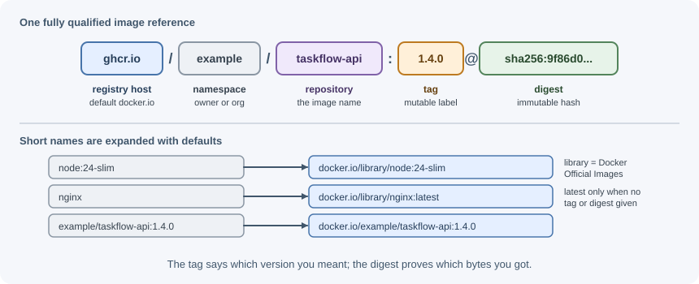
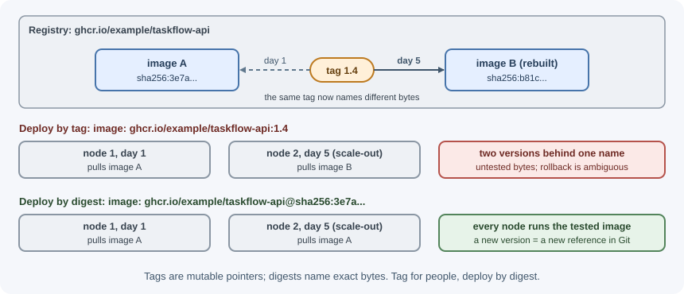
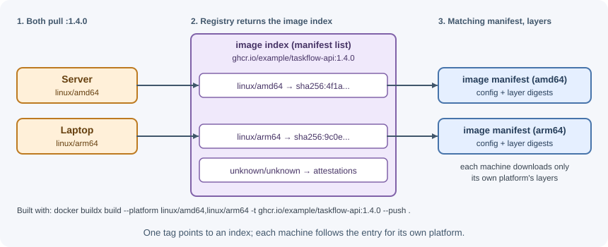

Images, Registries, and Tagging¶
Once an image is built, it has to be named, stored, moved to the machines
that run it, and eventually deleted. This lesson covers how image
references are structured, what a registry actually stores (manifests,
configs, and layers addressed by digest), why tags can move but digests
cannot, a tagging strategy that keeps deploys reproducible, the major
registries, multi-architecture images with docker buildx, sharing the
build cache through a registry, retention policies, and pull rate limits.
Why it matters¶
The image reference in a deployment file is the single link between "the
code we tested" and "the code that runs". If it says taskflow-api:latest,
nobody can tell which commit is in production, two servers can run
different code under the same name, and a rollback has nothing exact to
return to. If it says taskflow-api@sha256:..., every node runs identical
bytes and the deploy history is the history of that reference.
Registries are also production dependencies. A registry outage, an anonymous pull limit, or a cleanup policy that deleted an image still in use can block every deploy and every autoscaling event at the worst possible moment.
Real-world usage¶
- OCI Distribution Specification. The
distribution spec
defines the HTTP API that Docker Hub, GHCR, ECR, Artifact Registry, ACR,
and Harbor all implement for pushing and pulling manifests and blobs by
digest. That shared API is why one
docker pushcommand works against any of them. - Kubernetes. The Images
documentation recommends avoiding the
:latesttag in production, explains thatlatest(or no tag) changes the default pull policy toAlways, and shows pinning an image by digest so every node runs the same version. - Docker Hub. Docker's usage and limits documentation describes the pull rate limits that apply to anonymous and authenticated users, which is why CI systems and clusters authenticate or use a mirror.
- Amazon ECR. The lifecycle policies guide shows rules that expire untagged images and cap the number of images per tag prefix, the standard way to keep registry storage from growing without bound.
Popular tools and providers: Docker Hub, GitHub Container Registry
(GHCR), Amazon ECR, Google Artifact Registry, Azure Container Registry,
Harbor, Quay, and JFrog Artifactory; docker buildx, crane, skopeo,
and regctl for inspecting and copying images.
How it works¶
Anatomy of an image reference¶
A reference has up to five parts:
[registry/][namespace/]repository[:tag][@digest].

| Part | Example | Rules and defaults |
|---|---|---|
| Registry | ghcr.io, 123456789012.dkr.ecr.us-east-1.amazonaws.com |
Recognized by a dot, a port, or localhost; defaults to Docker Hub (docker.io) |
| Namespace | example |
An account, organization, or project; Docker Hub's Official Images use library |
| Repository | taskflow-api |
Lowercase letters, digits, and separators |
| Tag | 1.4.0, sha-3f9c2e1 |
Up to 128 characters of letters, digits, _, ., -; defaults to latest |
| Digest | sha256:9f86d0... |
The SHA-256 of the manifest; if present, the tag is ignored for pulling |
latest is not special to the registry. It is just the tag Docker uses
when you do not give one, and nothing forces it to point to the newest
image.
What a registry stores¶
A registry stores three kinds of objects, each addressed by the SHA-256 digest of its content:
- Layers (blobs): compressed tar archives of filesystem changes.
- The image config (a blob): JSON with the environment, entry point, command, user, and the ordered list of uncompressed layer digests.
- The manifest: a small JSON document that references the config and the layers by digest and size.
{
"schemaVersion": 2,
"mediaType": "application/vnd.oci.image.manifest.v1+json",
"config": {
"mediaType": "application/vnd.oci.image.config.v1+json",
"digest": "sha256:<config-digest>",
"size": 7023
},
"layers": [
{
"mediaType": "application/vnd.oci.image.layer.v1.tar+gzip",
"digest": "sha256:<base-layer-digest>",
"size": 28230000
},
{
"mediaType": "application/vnd.oci.image.layer.v1.tar+gzip",
"digest": "sha256:<node-modules-layer-digest>",
"size": 12900000
}
]
}
The image digest you deploy is the digest of this manifest. Because the manifest contains the digests of everything below it, the digest pins the entire image: change one byte in any layer and every digest above it changes. A tag is just a named pointer from a repository to a manifest digest.
Pushing and pulling move these objects separately. docker push first
asks the registry whether each layer digest already exists (and prints
Layer already exists when it does), uploads only the missing ones, and
then uploads the manifest and moves the tag. docker pull reads the
manifest and downloads only the layers the local machine lacks. That is
why a code-only change to the TaskFlow API pushes a 1 MB layer, not the
whole 250 MB image.
Tags are mutable, digests are immutable¶

Anyone with push access can move a tag at any time, and CI does it
routinely when it rebuilds 1.4 with a patched base image. A deployment
that references a tag therefore depends on when each node pulled it.
Kubernetes makes this worse with latest: the default pull policy becomes
Always and every restart may fetch something new.
A digest can never point to different content. Deploying by digest, or by a tag the registry refuses to overwrite, makes every node run the same bytes and makes rollbacks exact. Several registries can enforce this: Amazon ECR repositories can be set to immutable tags, and Google Artifact Registry Docker repositories have an immutable-tags option.
A tagging strategy¶
| Tag | Example | Moves? | Use it for |
|---|---|---|---|
| Commit SHA | sha-3f9c2e1 or the full SHA |
Never (one build per commit) | The canonical, traceable build identity |
| Full version | 1.4.0 |
Should never move | Releases; what changelogs and humans refer to |
| Minor / major | 1.4, 1 |
Yes, to the newest patch | Consumers who accept updates automatically |
| Branch | main |
Yes, on every merge | Development environments that track a branch |
latest |
latest |
Yes | Local convenience only; never in deploy manifests |
| Environment | production |
Yes | Avoid: hides which build is where; use digests in GitOps instead |
A practical recipe that many teams use:
- CI tags every build with the commit SHA and pushes it once.
- A release adds
1.4.0(and moves1.4and1) to the same digest; it does not rebuild. - Deployment manifests reference the digest, or the immutable SHA tag
plus digest (
taskflow-api:sha-3f9c2e1@sha256:...) so people can read it and machines can verify it. - Every image carries OCI labels such as
org.opencontainers.image.sourceandorg.opencontainers.image.revisionso anyone can trace it back to the repository and commit. GHCR uses thesourcelabel to link a package to its repository.
Promoting the same digest through environments is covered in artifacts and environment promotion, and version numbering in versioning, tags, and releases.
Registries¶
| Registry | Reference format | Authentication | Good fit |
|---|---|---|---|
| Docker Hub | docker.io/<namespace>/<repo> |
docker login with an access token |
Public images, Official Images |
| GitHub Container Registry | ghcr.io/<owner>/<image> |
GITHUB_TOKEN in Actions, or a token with package scopes |
Code on GitHub, open source |
| Amazon ECR | <account>.dkr.ecr.<region>.amazonaws.com/<repo> |
aws ecr get-login-password piped to docker login; IAM roles on AWS |
EKS, ECS, Lambda containers |
| Google Artifact Registry | <region>-docker.pkg.dev/<project>/<repo>/<image> |
gcloud auth configure-docker <region>-docker.pkg.dev |
GKE, Cloud Run |
| Azure Container Registry | <name>.azurecr.io/<repo> |
az acr login --name <name>; managed identities |
AKS, Azure Container Apps |
| Harbor (self-hosted) | <your-host>/<project>/<repo> |
Users, robot accounts, OIDC | On-premises, air-gapped, proxy caches |
Choose the registry that sits in the same cloud and region as the
workloads that pull from it: pulls are faster, often free of egress
charges, and authenticate through the platform's identity system instead
of stored passwords. Google's older Container Registry (gcr.io) has been
replaced by Artifact Registry.
Multi-architecture images¶
Images contain compiled binaries (the node executable, native modules,
system libraries), so an image built for linux/amd64 does not run
natively on linux/arm64 machines such as Apple-silicon laptops and
AWS Graviton or other Arm servers. A multi-platform image solves this with
an image index (Docker calls it a manifest list): one tag points to an
index, and the index points to one manifest per platform.

docker buildx builds every platform in one command. It has three ways
to produce non-native binaries:
| Method | How | Trade-off |
|---|---|---|
| QEMU emulation | Runs the other architecture's instructions in an emulator | Works for any Dockerfile; npm ci with native modules can be several times slower |
| Native nodes | A builder with one machine per architecture (docker buildx create --append) |
Fast; needs an Arm machine or runner |
| Cross-compilation | Build stage runs on $BUILDPLATFORM and outputs for $TARGETPLATFORM |
Fastest; only for steps whose output does not depend on the CPU |
For a TypeScript service, compiling to JavaScript produces the same files
on any CPU, so the build stage can run natively on the build machine.
Production node_modules may contain native modules and must be installed
on (or emulated for) each target platform.
BuildKit also attaches attestations when pushing (a minimal build
provenance record by default, and an SBOM if you ask for one). They are
stored in the index as extra entries with the platform unknown/unknown,
which is why even a single-platform push can produce an index. A few older
registries and tools do not understand them; --provenance=false
disables them, at the cost of losing supply-chain metadata.
Sharing the build cache through a registry¶
CI runners are usually fresh machines with an empty BuildKit cache. Export the cache after each build and import it before the next:
| Cache backend | Flags | Notes |
|---|---|---|
| Registry | --cache-to type=registry,ref=<image>:buildcache,mode=max --cache-from type=registry,ref=<image>:buildcache |
Works with any CI; stored as a separate image reference |
| GitHub Actions | --cache-to type=gha,mode=max --cache-from type=gha |
Uses the Actions cache service; subject to its size limits |
| Inline | --cache-to type=inline |
Embeds cache metadata in the image itself; only min mode |
mode=min exports only the layers of the final image. mode=max also
exports the layers of intermediate stages, which is what makes multi-stage
builds fast in CI: without it, the build and deps stages are rebuilt
every time.
Retention and cleanup¶
Every CI build pushes an image, so a busy repository accumulates thousands of them. Registries offer rules to delete old ones:
- Amazon ECR: lifecycle policies that expire untagged images after N days or keep only the newest N images matching a tag prefix.
- Google Artifact Registry: cleanup policies with delete and keep conditions (tag state, tag prefixes, age, and a "keep most recent N").
- Azure Container Registry: retention for untagged manifests and the
acr purgecommand run as a scheduled task. - GHCR: delete package versions through the API or a scheduled workflow.
Design rules so that cleanup cannot break a rollback: keep every release
tag (1.4.0) indefinitely or for your support window, keep the last 30 to
100 commit builds, expire untagged manifests after a week, and never
delete a digest that a running deployment, or the previous release,
still references.
Pull rate limits and availability¶
Docker Hub limits how many pulls an IP address or account can make per
hour, with much lower limits for anonymous pulls than for authenticated
ones; check Docker's documentation for the current numbers. A CI fleet or
a cluster behind one NAT address can hit the anonymous limit quickly and
fail with toomanyrequests. The fixes, in order of robustness:
- Authenticate every pull (CI secrets, Kubernetes
imagePullSecrets). - Use a pull-through cache: ECR pull-through cache rules, Artifact Registry remote repositories, ACR artifact cache, or a Harbor proxy project.
- Copy the base images you depend on into your own registry and build from there, which also protects you if an upstream tag changes or disappears.
When to use and when not to use¶
| Decision | Recommendation |
|---|---|
| Reference in production manifests | Digest (optionally with the SHA tag for readability) |
Reference in a Dockerfile FROM |
Version tag for readability, plus digest when you need full reproducibility and have automated updates |
latest |
Local experiments only |
| Registry for a cloud workload | The registry of that cloud, same region |
| Registry for open-source images | Docker Hub or GHCR |
| Multi-platform builds | When any developer, CI runner, or server uses a different architecture |
| Registry cache | Every CI pipeline that builds images |
Multi-platform builds cost build time; skip them if every machine that
runs the image is amd64 and nobody develops on Arm. Do not pin every
image by digest by hand without a bot (such as Dependabot or Renovate)
to update the digests, or patches will never arrive.
Practical examples¶
Tag and push the TaskFlow API to GHCR¶
# Log in with a token read from stdin (never on the command line)
echo "$GHCR_TOKEN" | docker login ghcr.io -u <github-user> --password-stdin
SHA=$(git rev-parse --short=12 HEAD)
docker build \
--label org.opencontainers.image.source=https://github.com/example/taskflow-api \
--label org.opencontainers.image.revision="$(git rev-parse HEAD)" \
-t ghcr.io/example/taskflow-api:sha-"$SHA" .
docker push ghcr.io/example/taskflow-api:sha-"$SHA"
# Release: add a version tag to the SAME image, without rebuilding
docker tag ghcr.io/example/taskflow-api:sha-"$SHA" ghcr.io/example/taskflow-api:1.4.0
docker push ghcr.io/example/taskflow-api:1.4.0
# The digest to put in deployment manifests
docker image inspect --format '{{index .RepoDigests 0}}' \
ghcr.io/example/taskflow-api:1.4.0
# ghcr.io/example/taskflow-api@sha256:<digest>
Build multi-platform images locally¶
# One-time: a builder that can produce multi-platform images
docker buildx create --name multi --driver docker-container --use
docker run --privileged --rm tonistiigi/binfmt --install arm64,amd64 # QEMU handlers
docker buildx build \
--platform linux/amd64,linux/arm64 \
-t ghcr.io/example/taskflow-api:sha-"$SHA" \
--push .
docker buildx imagetools inspect ghcr.io/example/taskflow-api:sha-"$SHA"
# Output, abbreviated:
# MediaType: application/vnd.oci.image.index.v1+json
# Manifests:
# Platform: linux/amd64
# Platform: linux/arm64
# Platform: unknown/unknown (an attestation manifest)
Multi-platform results must be pushed (or exported) because the classic local image store holds one platform per tag; Docker Desktop's containerd image store can keep all of them locally.
Cross-compile the platform-independent stage¶
# syntax=docker/dockerfile:1
# Dockerfile (excerpt): compile once natively, install deps per platform
# Runs on the build machine's own CPU: TypeScript output is the same everywhere
FROM --platform=$BUILDPLATFORM node:24-slim AS build
WORKDIR /app
COPY package.json package-lock.json ./
RUN --mount=type=cache,target=/root/.npm npm ci
COPY tsconfig.json ./
COPY src ./src
RUN npm run build
# Runs once per target platform: native modules must match the CPU
FROM node:24-slim AS deps
WORKDIR /app
COPY package.json package-lock.json ./
RUN --mount=type=cache,target=/root/.npm npm ci --omit=dev
FROM node:24-slim AS runtime
WORKDIR /app
ENV NODE_ENV=production
COPY --from=deps /app/node_modules ./node_modules
COPY --from=build /app/dist ./dist
USER node
CMD ["node", "dist/server.js"]
BuildKit sets BUILDPLATFORM and TARGETPLATFORM automatically. Only the
deps stage runs under emulation for the non-native platform, so the
slow part of a multi-platform build shrinks to one npm ci.
A CI workflow: build, tag, cache, push¶
# .github/workflows/image.yml
name: image
on:
push:
branches: [main]
tags: ["v*.*.*"]
permissions:
contents: read
packages: write
jobs:
build:
runs-on: ubuntu-latest
steps:
- uses: actions/checkout@v7
with:
persist-credentials: false
- uses: docker/setup-qemu-action@v4
- uses: docker/setup-buildx-action@v4
- uses: docker/login-action@v4
with:
registry: ghcr.io
username: ${{ github.actor }}
password: ${{ secrets.GITHUB_TOKEN }}
- id: meta
uses: docker/metadata-action@v6
with:
images: ghcr.io/example/taskflow-api
flavor: latest=false
tags: |
type=sha,format=long
type=semver,pattern={{version}}
type=semver,pattern={{major}}.{{minor}}
- id: build
uses: docker/build-push-action@v7
with:
context: .
platforms: linux/amd64,linux/arm64
push: true
tags: ${{ steps.meta.outputs.tags }}
labels: ${{ steps.meta.outputs.labels }}
cache-from: type=registry,ref=ghcr.io/example/taskflow-api:buildcache
cache-to: type=registry,ref=ghcr.io/example/taskflow-api:buildcache,mode=max
- run: echo "Pushed digest ${{ steps.build.outputs.digest }}" >> "$GITHUB_STEP_SUMMARY"
metadata-action produces a sha-<full commit> tag on every push and
1.4.0 plus 1.4 when a v1.4.0 Git tag is pushed, and fills in the OCI
labels; latest=false stops it from also moving a latest tag. The
registry cache in mode=max keeps the deps and build stages warm
between runs. The digest output is what a deployment step or GitOps
commit should record. The workflow structure itself is covered in
GitHub Actions in depth.
An ECR lifecycle policy¶
{
"rules": [
{
"rulePriority": 1,
"description": "Expire untagged images after 7 days",
"selection": {
"tagStatus": "untagged",
"countType": "sinceImagePushed",
"countUnit": "days",
"countNumber": 7
},
"action": { "type": "expire" }
},
{
"rulePriority": 2,
"description": "Keep only the 50 newest commit builds",
"selection": {
"tagStatus": "tagged",
"tagPrefixList": ["sha-"],
"countType": "imageCountMoreThan",
"countNumber": 50
},
"action": { "type": "expire" }
}
]
}
aws ecr put-lifecycle-policy \
--repository-name taskflow-api \
--lifecycle-policy-text file://lifecycle.json
Release tags such as 1.4.0 match neither rule, so they are kept. Test a
new policy with the lifecycle policy preview before applying it.
Inspect without pulling¶
docker buildx imagetools inspect node:24-slim # index and platforms
docker buildx imagetools inspect --raw ghcr.io/example/taskflow-api:1.4.0
skopeo inspect docker://ghcr.io/example/taskflow-api:1.4.0 # labels, digest, layers
crane digest ghcr.io/example/taskflow-api:1.4.0 # just the digest
Best practices¶
- Give every build an immutable, traceable tag (the commit SHA) and push it exactly once.
- Add release tags to an existing digest instead of rebuilding.
- Deploy by digest; keep human-readable tags alongside for people.
- Turn on tag immutability where the registry supports it.
- Label images with their source repository and revision.
- Use the registry in the same cloud and region as the workloads.
- Authenticate all pulls and mirror the public base images you rely on.
- Publish multi-platform images when any consumer runs a different architecture.
- Export the build cache from CI with
mode=max. - Write retention rules that keep releases and anything still deployed.
In production¶
- Pulls fail with
toomanyrequests. Detect: CI jobs or new pods fail at image pull, and the error mentions the pull rate limit. Cause: anonymous Docker Hub pulls from many runners or nodes sharing one IP address. Fix: authenticate pulls, configure a pull-through cache or mirror, and copy base images into your own registry. - Some servers run old code after a deploy.
Detect: responses differ between instances;
docker inspectshows different image IDs for the same tag. Cause: the deployment references a mutable tag, and each node pulled it at a different time (or reused a cached copy). Fix: deploy by digest or an immutable SHA tag. no matching manifest for linux/arm64/v8 in the manifest list entries. Detect: the pull fails only on Arm machines (Apple silicon, Graviton). Cause: the image was built foramd64only. Fix: build with--platform linux/amd64,linux/arm64, or pin the platform explicitly where emulation is acceptable.- A rollback fails with
manifest unknown. Detect: the previous release's image cannot be pulled. Cause: a cleanup rule deleted it because it fell outside "keep the last N". Fix: exempt release tags from expiry, keep enough history for your rollback window, and check deployed digests before deleting. - CI image builds stay slow despite caching.
Detect: build logs show the dependency install running on every
pipeline although the lockfile did not change. Cause: no cache import
on fresh runners, or cache exported with
mode=minso intermediate stages are missing. Fix:--cache-fromand--cache-towithmode=maxto a registry or the CI cache. - Pushing to GHCR from CI fails with
denied. Detect: login succeeds butdocker pushis rejected. Cause: the workflow token lackspackages: write, or the package is not linked to the repository. Fix: add the permission to the workflow and link the package (theorg.opencontainers.image.sourcelabel does this automatically). - The registry storage bill grows every month. Detect: thousands of untagged manifests and commit images in the repository. Cause: no retention policy. Fix: lifecycle or cleanup rules that expire untagged and old commit images while keeping releases.
Important terminology¶
- Image reference: The registry, namespace, repository, tag, and/or digest naming an image.
- Registry: A server implementing the OCI distribution API that stores manifests and blobs.
- Repository: A named collection of images (all versions of
taskflow-api). - Tag: A mutable, human-readable pointer to a manifest.
- Digest: The SHA-256 hash of content; for an image, the hash of its manifest. Immutable by construction.
- Manifest: JSON that lists an image's config and layers by digest.
- Image index (manifest list): JSON that lists one manifest per platform under one tag.
- Platform: An OS and CPU architecture pair such as
linux/arm64. - Attestation: Signed or unsigned metadata about how an image was built (provenance) or what it contains (SBOM).
- Pull-through cache: A registry that fetches and stores images from an upstream registry on first pull.
- Lifecycle (retention) policy: Rules that delete old images automatically.
Common mistakes and misconceptions¶
- Thinking
latestmeans newest. It means "no tag was given". - Deploying mutable tags and expecting every node to run the same code.
- Rebuilding for each environment instead of promoting one digest.
- Assuming pure JavaScript images are architecture-independent; the Node binary and native modules are not.
- Deleting old images without checking which digests are deployed or needed for rollback.
- Pulling anonymously from Docker Hub in CI and clusters.
- Pinning base images by digest without automation to update them, so security patches never arrive.
Revision questions¶
- Break
ghcr.io/example/taskflow-api:1.4.0@sha256:...into its parts and say which part decides what is pulled. - What does
nginxexpand to, and why islatestnot guaranteed to be the newest release? - Why does a code-only change push a 1 MB layer rather than the whole image?
- A tag
1.4is rebuilt on day 5. A deployment that references:1.4scales from 2 to 6 replicas on day 6. How many replicas run the day-1 image, and how would you prevent the mix? - How does a laptop on
linux/arm64end up with different layers than a server onlinux/amd64when both pull the same tag? - Why does a multi-stage build need
mode=maxcache export to stay fast in CI? - Design a retention policy that saves storage but can never break a rollback to the previous two releases.
- Name two ways to avoid Docker Hub rate limits in a Kubernetes cluster.